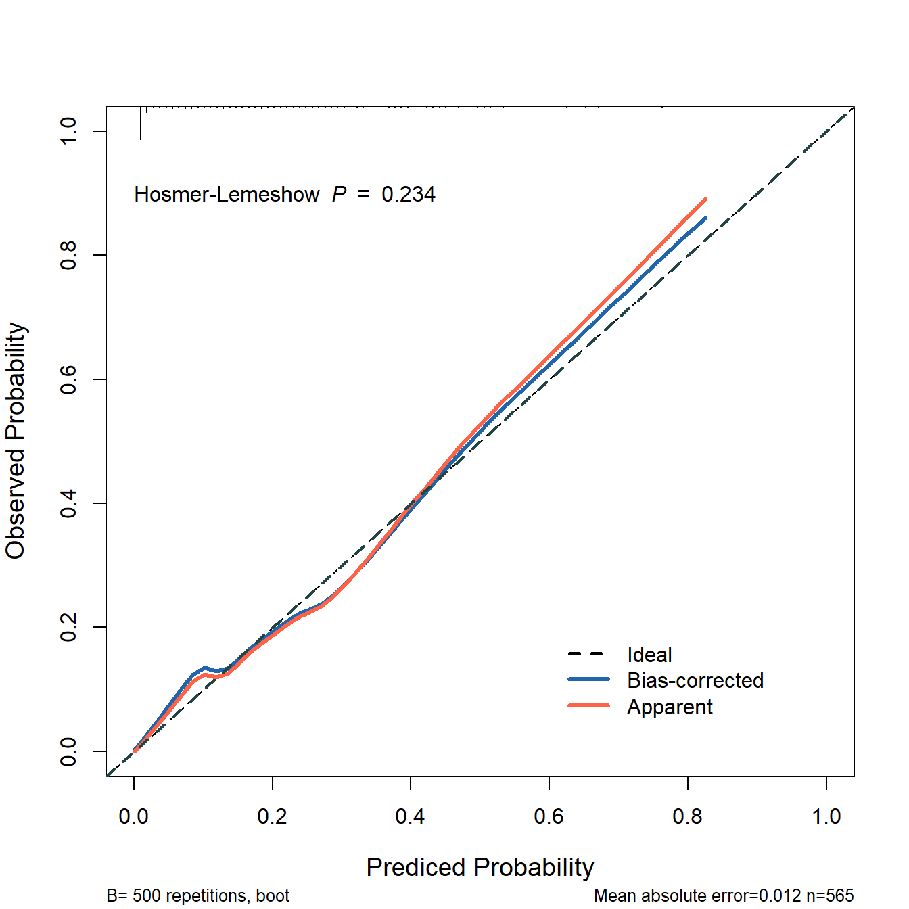
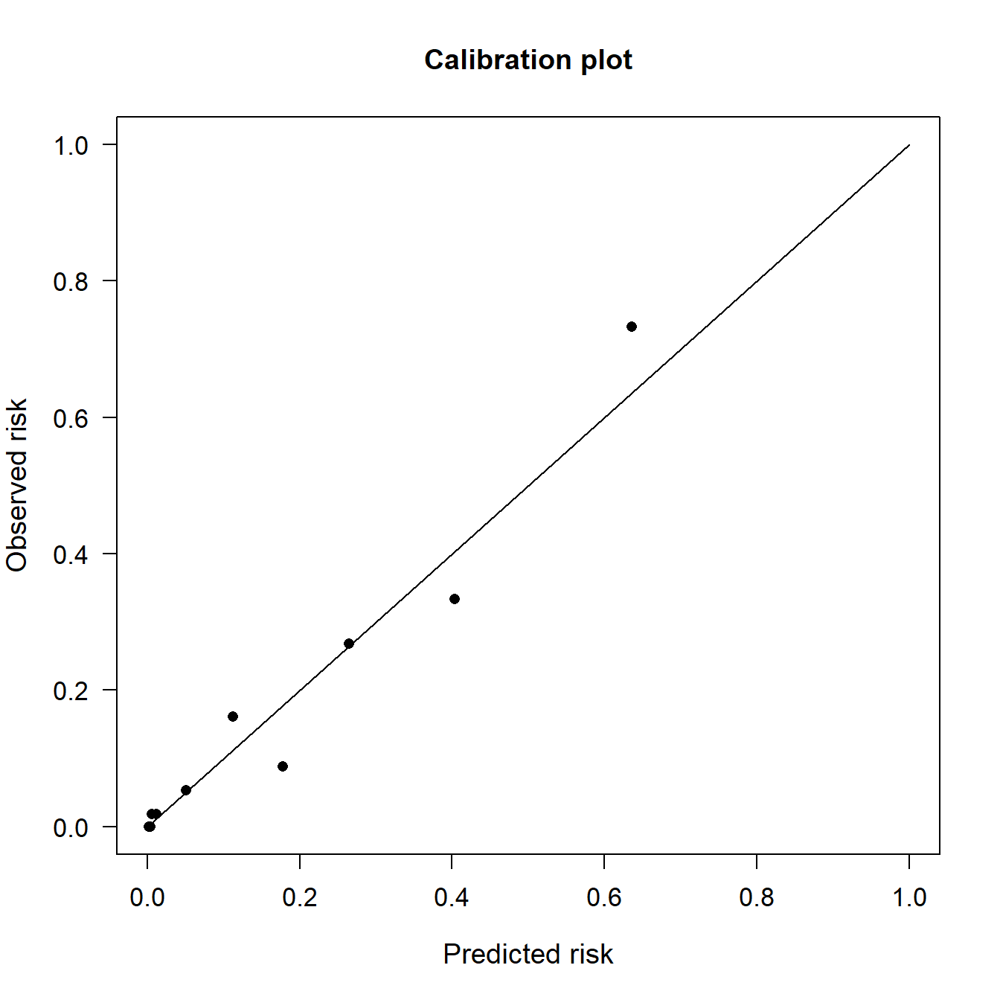

rm(list = ls())
lowbirth <- read.csv("./datasets/lowbirth.csv")30 hosmer-lemeshow检验
模型的校准度除了使用校准曲线进行衡量外，还可以用统计检验来评估真实概率和预测概率的差异，比如Hosmer-Lemeshow检验（H-L检验），若得到的P值小于0.05，那说明模型的预测概率和真实概率之间确实有差异，不是由于随机误差导致的，若P值大于0.05，说明通过了H-L检验，预测概率和实际概率没有明显的差异。
但是H-L检验无法量化差异的大小，也不能说明差异的大小在低风险患者和高风险患者之间是否存在差异。另外这个指标受到组别数量的影响很大，非常不稳定，建议大家不要单独使用这个指标。
H-L检验目前主要是针对逻辑回归模型的拟合优度（goodness-of-fit）检验，但是由于它只要有预测概率就能计算，所以理论上其他模型也是可以进行这个检验的（虽然我也不知道这样做对不对）。
在R语言中有多个包都可以进行H-L检验，下面给大家介绍5个方法。
30.1 准备数据
使用lowbirth数据集，这个数据集是关于低出生体重儿能否存活的数据集，其中dead这一列是结果变量，0代表存活，1代表死亡，但是存活和死亡的比例严重失衡，存活的只有94个，死亡的有471个。其余列都是预测变量。该数据集没有缺失值，也没有高度相关的自变量。
获取lowbirth数据请在公众号：医学和生信笔记，后台回复20220520。或者到粉丝QQ群文件自取。
查看一下数据：
dim(lowbirth) # 565行，10列
## [1] 565 10
str(lowbirth)
## 'data.frame': 565 obs. of 10 variables:
## $ birth : num 81.5 81.6 81.6 81.6 81.6 ...
## $ lowph : num 7.25 7.06 7.25 6.97 7.32 ...
## $ pltct : int 244 114 182 54 282 153 229 182 361 378 ...
## $ race : chr "white" "black" "black" "black" ...
## $ bwt : int 1370 620 1480 925 1255 1350 1310 1110 1180 970 ...
## $ delivery: chr "abdominal" "vaginal" "vaginal" "abdominal" ...
## $ apg1 : int 7 1 8 5 9 4 6 6 6 2 ...
## $ vent : int 0 1 0 1 0 0 1 0 0 1 ...
## $ sex : chr "female" "female" "male" "female" ...
## $ dead : int 0 1 0 1 0 0 0 0 0 1 ...
# 看下结果变量的比例
table(lowbirth$dead)
##
## 0 1
## 471 94race这一列有4个类别，分别表示4个人种，但是东方人和美洲人太少了，这样会影响模型拟合，所以我们这两个人种变成other：
# 其中两个人种人数太少了
table(lowbirth$race)
##
## black native American oriental white
## 325 14 4 222
# 把人数太少的变成other
lowbirth[lowbirth == "oriental"] <- "other"
lowbirth[lowbirth == "native American"] <- "other"在R语言中一定要把分类变量因子型，这样才能在建模时进行正确的编码：
library(dplyr)
lowbirth <- lowbirth %>%
mutate(across(where(is.character),as.factor)
#dead = factor(dead, levels=c(1,0),labels=c("live","death"))
)
str(lowbirth)
## 'data.frame': 565 obs. of 10 variables:
## $ birth : num 81.5 81.6 81.6 81.6 81.6 ...
## $ lowph : num 7.25 7.06 7.25 6.97 7.32 ...
## $ pltct : int 244 114 182 54 282 153 229 182 361 378 ...
## $ race : Factor w/ 3 levels "black","other",..: 3 1 1 1 1 1 3 1 3 3 ...
## $ bwt : int 1370 620 1480 925 1255 1350 1310 1110 1180 970 ...
## $ delivery: Factor w/ 2 levels "abdominal","vaginal": 1 2 2 1 2 1 2 2 1 2 ...
## $ apg1 : int 7 1 8 5 9 4 6 6 6 2 ...
## $ vent : int 0 1 0 1 0 0 1 0 0 1 ...
## $ sex : Factor w/ 2 levels "female","male": 1 1 2 1 1 1 2 2 2 1 ...
## $ dead : int 0 1 0 1 0 0 0 0 0 1 ...
注释
如果结果变量是分类变量，我建议把结果变量也变为因子型，并设定好因子的顺序，但是对于rms来说，最好是使用数值型，所以这里我没改。
30.2 方法1：ResourceSelection
这个R包进行H-L检验应该是大家见的比较多的方法。
首先是建立逻辑回归模型：
model_glm <- glm(dead ~ birth + lowph + pltct + bwt + vent + race,
data = lowbirth, family = binomial)然后使用模型预测的概率，和模型的真是结果，就可以进行H-L检验了：
# 加载R包
library(ResourceSelection)
# hosmer-lemeshow 检验
hoslem.test(model_glm$y, fitted(model_glm), g=10) # g=10表示分成10组
##
## Hosmer and Lemeshow goodness of fit (GOF) test
##
## data: model_glm$y, fitted(model_glm)
## X-squared = 10.463, df = 8, p-value = 0.234只提取P值也可以，方便加在校准曲线图中：
p.hoslem <- hoslem.test(model_glm$y, fitted(model_glm), g=10)$p.value
p.hoslem
## [1] 0.2340365下面我们绘制一个校准曲线，并把H-L检验的结果放在图里：
library(rms)
# 必须先打包数据
dd <- datadist(lowbirth)
options(datadist="dd")
# 构建 calibration
fit <- lrm(dead ~ birth + lowph + pltct + bwt + vent + race,
data = lowbirth,x = TRUE, y = TRUE)
cal <- calibrate(fit, method='boot', B=500)画图还是和上面一样，就是多了一个添加 hosmer-lemeshow P值的步骤。
plot(cal,
xlim = c(0,1),
ylim = c(0,1),
xlab = "Prediced Probability",
ylab = "Observed Probability",
cex.lab=1.2, cex.axis=1, cex.main=1.2, cex.sub=0.8,
#subtitles = FALSE,
legend = FALSE
)
##
## n=565 Mean absolute error=0.012 Mean squared error=0.00028
## 0.9 Quantile of absolute error=0.032
lines(cal[,c("predy","calibrated.corrected")],
type = 'l', #连线的类型，可以是"p","b","o"
lwd = 3, #连线的粗细
pch = 16, #点的形状，可以是0-20
col = "#2166AC") #连线的颜色
lines(cal[,c("predy","calibrated.orig")],type="l",pch=16,lwd=3,col="tomato")
abline(0,1,
lty = 2, #对角线为虚线
lwd = 2, #对角线的粗细
col = "#224444")#对角线的颜色
legend(0.6,0.2,
c("Ideal","Bias-corrected","Apparent"),
lty = c(2,1,1),
lwd = c(2,3,3),
col = c("black","#2166AC","tomato"),
bty = "n"
)
text(0,0.9,bquote("Hosmer-Lemeshow "~italic(P)~" = "~.(round(p.hoslem,3))),
adj = 0)
30.3 方法2：generalhoslem
这个R包的使用方法和ResourceSelection完全一样，结果也是一样的：
library(generalhoslem)
logitgof(model_glm$y, fitted(model_glm), g=10, ord = F)
##
## Hosmer and Lemeshow test (binary model)
##
## data: model_glm$y, fitted(model_glm)
## X-squared = 10.463, df = 8, p-value = 0.23430.4 方法3：performance
这个包非常强大，它属于easystats这个包的一部分，我在之前也介绍过：
但是它只能对一些统计模型进行检验，不能对机器学习模型进行检验，而且在计算模型性能指标方面，和yardstick有很多重合，所以我平常还是用yardstick更多。
library(performance)
performance_hosmer(model_glm, n_bins = 10)
## # Hosmer-Lemeshow Goodness-of-Fit Test
##
## Chi-squared: 10.463
## df: 8
## p-value: 0.23430.5 方法4：PredictABEL
这个包在计算NRI和IDI时使用过，非常强大，还可以绘制校准曲线并且进行H-L检验，只需要使用plotCalibration()函数即可。
library(PredictABEL)
# 首先获得预测概率,和fitted(model_glm)完全一样
predRisk <- PredictABEL::predRisk(model_glm)
rr <- plotCalibration(data=lowbirth, cOutcome=10, #结果变量在数据的第几列
predRisk=predRisk,
groups=10)
提取H-L检验的P值：
rr$p_value
## [1] 0.2805也是和其他方法不一样，建议别用这个结果。
30.6 方法5：glmtoolbox
这个方法得到的结果与其他几种方法的结果都不一样，我没查看源码，不知道有啥区别，大家还是选择其他几个方法吧。
library(glmtoolbox)
hltest(model_glm,verbose = F)$p.value
## [1] "0.3410089"多种方法，任君选择，搭配校准曲线教程一起，食用更佳。
公众号后台回复校准曲线集合获取合集。